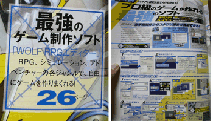

シルバーセカンド開発日誌
2008年06月
ということで意外と早くの復帰です。
身内の容態は大したことありませんでした、
っていうか仕事行ってるし！
ベッドが空いてないから手術が先延ばしになったそうです。
緊急ではないと言え、医療の世界も
キャパシティの限界が迫ってるようで厳しそうです。
あと何年かしたら、病気しても入院できないかも。

前回のアンケ絵、試しに水彩風に塗ってみました。
とりあえず実験的に、色鮮やかなアクエリアさんだけ。
ツボさえ突けばサッとお手軽に塗れるのがいいですね、水彩風。
もちろんガッツリやるならもっとしっかり
習熟しないといけないのでしょうけれど。
で、それはそうと、シルフェイド学院物語の開発を
正式に宣言することにします！
今回は、誰でもテキスト形式でデータが追加できる方式！
公式シナリオに、あなたが作ったシナリオやイベントを追加したり、
新しくフォルダ作って公式シナリオまったく関係無しの
SFゲームにしたり戦争ゲーム的な物語にしたり、
なぜか幻想譚世界の育成ゲームにしたりなど自由自在！
シルエットノートで二次創作が活発になったのを受けて、
一種のゲーム制作ソフトとしての側面を
強化することにしたいと思います！
海外ゲームのMODとか、そんな感じで。
育成機能！バトルシステム！
国盗りシミュ機能！アイテムクリエイト機能！
など、シミュレーションゲーム的な
システムに関しては充実の一品（予定）！！
お楽しみに！
あと実家に帰ったので、溜まっていた見本誌を確認しました。
（見本誌は基本的に実家に送ってるんです。頑張ってるよー！の証）
最近はモノリスフィアとWOLF RPGエディターがよく紹介されています、
なぜかシル見も載ってましたけど。
リメイク予定とちゃんと書いてあったけど
今見ると恥ずかしすぎです。
早くニューバージョン出したいいい。
その中でも、WOLF RPGエディターが「iP!」7月号（見本誌もらった）に
1ページまるごと紹介されてて目玉飛び出ました。煽り文は、
「最強のゲーム制作ソフト 『WOLF RPGエディター』
RPG、シミュレーション、アドベンチャーの各ジャンルで、
自由にゲームを作りまくれる！」
という、ずいぶん思い切った紹介。ギリギリ間違ってません。

でもそこに書かれたウディタの使い方が
なんだかちょっぴり間違ってる気がします！
新規ゲームの作成で「ゲームデータの作成」機能は使わなくていいんです！
あ、でも「すごく作りやすいよ！簡単簡単！」って
一言も書いてないところは、
向こうさんも非常によく分かってると思いました。
ウディタ公式の「こんなもの作ってます」スレに行くと
色々作品が上がってるので、興味がお有りの方はぜひどうぞ。
アクションRPGやタクティクスオウガみたいな3DのSRPGやら
普通のSRPGやら作ってらっしゃる方も多いので、今後が楽しみです。
完成品はぜひ、登録ページにも載せてくださると
みんなも嬉しいと思います。 ■
2008-06-21 (土) WOLF RPGエディターの歴史▼WOLF RPGｴﾃﾞｨﾀｰを作っておきながら
それでRPG以外のものしか作ろうとしないウルフです。
身内が突然の容態悪化で手術だ何だとかあって、
ついでに低気圧接近中で気分が落ち込み気味です。
これからしばらく、色々と忙しいことになりそうなので
しばらく更新が途絶えるかもしれません。
ひとまず、開発日誌はちょっとだけ休息させていただきます。
たぶん二週間もすれば帰ってきます！
|

|
特にネタもないのでウディタ話。歴史と過去を振り返り。
WOLF RPGエディター、Ver1.02になってから約10日で
2500件のダウンロードがありました（フル版1950、プログラムのみ550）。
まさかこんなにダウンロードしてくださる人が
いらっしゃるとは思いませんでした！
「最終的に200人くらいの人がアクティブ層になるのかなあ、
サポートめんどいしもう打ち切りにしちゃおうか」
などと一時期思っていましたが、
やめないでデフォシステム搭載してみたり
バグ直したり新機能入れたりし続けてみたら、
窓の杜さんに紹介されたり
作品もぼつぼつ出始めてくるわで、
たとえ半ばイヤイヤやりながらでも、
継続することは力になるんだなあ、
と思い知らされます。ありがとうございます！
ダウンロードした人の内の99％の人が完成しないと仮定しても、
将来的に20作品くらいは期待していいかもしれません。
ツクールの作品公開率って何％くらいなんだろうなあ。
開発当初はRPGツクールVX発売が明かされていなかったがゆえに、
「このままじゃツクールも終わりかなあ、
でもお手軽2DRPGツクールはこれからもきっと必要だよな！
よっしゃ一肌脱ぐか！」
と偉そうなことを思って一般公開向けに開発をシフトしていたのですが、
VX発売でその目標が消失しちゃったので、
ウディタは微妙に迷走中です。
自分用ツールが欲しかったので別にいいといえばいいんですが、
ただお手軽表現ツールとしてのツクールが存続するなら、
こちらはこちらであんまり頑張ってもなあ、という感じでしたし、
エンターブレインさんの商売の邪魔して
白い目で見られるかもしれないしで、
何だか色々タイミングが悪かった気がしています。
それでもウディタがここまで良くなったのは皆さまのおかげです！
自分用としてもだいぶ使いやすくなったし、人のためと思わなければ
絶対追加しなかったような機能もいっぱいあるので、
多くの意見を下さった皆さんには本当に感謝しています。
ちなみに、シルエットノートではRPGツクールXPで
RGSSバリバリ使ってそれなりのものを作っていたので、
「ウディタにスクリプト機能は入れないんですか！？」
と聞かれることがあったんですが、
RGSSはイベントコマンドとの連携が取りにくかったり、
RGSS中でイベントコマンド実行したくても
「フンガー分かりづらいよぉぉ！」ってなったりしてて、
個人的には苦労の方が多く感じてしまいました。
自分は中途半端なRGSS習得者だったので、RGSS内だけで
完結するプログラムを綺麗に作る術を持たなかったというのが、
しんどいなあと感じた最大の要因ではないかと思います。
（しかも当時はC++を身につけてなかったので、
クラスの概念すらよく分かってなかった）
でも、ちょっとプログラムかじった人がこの程度ってことになると、
まともにRGSS使いこなせる人って何人いるのかなあ？ という疑問も。
下手するとウディタなんかより段違いにマニア向けです。
初心者、熟練者の両方の需要を満たしているといえばそうですが、
その両者の間がないような気がします。
RPGツクールXP、VXで凝ったものを作りたい～という方には、
とにかくプログラミング能力が必要ですが、
プログラミング能力があるならRPGツクールXP、VXの方が
作りやすいんじゃないかなあ、と思っています。
でもそこまでいったん突き詰めた結果、私みたいな凡人には
イベントコマンド型がいいやーと思いました。
初心者と熟練者の間の人には、ウディタをおすすめします。
RPGツクールは今後もRGSS方針貫くんでしょうか、
ついでにVX何本売れたんだろ、など色々気になることはいっぱいです。
誰か知ってたら教えてください！■
2008-06-16 (月) モノリスフィアキャラ人気▼モノリスフィアのアンケートですが、
人気投票の順位がそろそろ特定できそうな感じになってきました。

ということでアンケート結果を反映した感じのイラストラフ画。
でも今はゲーム制作が楽しいので絵が完成するかどうかは不明ッ！！
で、人気投票ですが、
1位モノリス、2位ムーン、以下やや混戦状態です。
今後の動向で順位が変わるかもしれません。
とりあえず、アクエリアさんが思った以上に人気でした。
セリフもあんまり無いと思ったのに！
やっぱりセクシー効果なんでしょうか。
あ、それと草子さんが予想以上に下位でした。
何となくそんな予感はしていました、
自分もあんまり好きになれません。
モノリスフィアは、
そろそろVectorさんでレビューされるっぽいので
遊ぶ人がちょっと増えるかと思います。
とりあえずピクニックモードが楽なので、
苦手そうな方はそれで頑張ってみてください！
にしても、モノリスフィアは最初のプロトタイプの頃から考えると
思いもよらないほど進化したなあ、と思います。
モノリスフィアの一番最初のバージョンは、
操作するのが「球」で、パワーアップアイテムをうまく使いつつ、
今のような操作で既定回数内でゴールまで飛ばしていく
パズルゲームのつもりだったのです。
が、それをキャラ（モノリス様）に変えるだけであら不思議、
一瞬でアクションゲームに！
ゲームの定義って何だ、と思わされます。
とりあえず今回の開発で、某社製のピンボールゲームやゴルフゲームで
球がカービィだったりサムスだったりする理由がよく分かりました。
やっぱり「球」にもキャラ性があった方が楽しいですね。
ただアクションとして突き詰めるなら、中途半端に描写するよりも、
もっとキャラを記号的にしても良かったかもしれません。
そう、いわば某社さんのマリ○やヨッ○ーのように。
○リオさんはもはや完全な記号なので、たとえば離婚歴があるとか、
過去に戦地でまちがって友人を
撃ったショックがトラウマになってるとか
そんなダークな設定も必要ありませんよね。
っていうかあったらイヤだ！
以下は拍手とかランドマスとか。 ▼追記を開く▼＞シル幻の「バーン歴」と、
＞シル見の「シルフェイド歴」ってどう違うの？
バーン歴は、初代バーン王が勝手に付けた暦です。
シルフェイド歴は特に設定を決めていませんが、
地上に文明が発生したときからの年月とか、そんな感じです、たぶん。
それはそうと『攻速機戦ランドマス』、
開発会社の方が倒産したのか夜逃げしちゃったのか何か知りませんが、
開発続行中止だそうです、なんてこった！
最初は誠実そうな運営さんだなあと思っていたところが、
急にゲームバランスの締め付けをキツくしたので何かと思いましたが、
開発会社が（おそらくお金の都合で）アウト寸前だったんですね。
こういうのは悲しいなあ。ちょっと残念。
とりあえず、当面は萌FPSのペーパーマンあたりに期待しつつ、
まったり自分の開発を進めようと思います。■
2008-06-10 (火) 顔グラ量産システム▼WOLF RPGエディター、MIDI超改善版をアップしました！
今さらですが、WOLF RPGエディターで
やってしまった大ミスがあります！
自分用だと思ってつい「コモンイベント」という
ツクール用の造語を何気なく使ったっきり放置して、
そのまま堂々と公開してしまったことです。
ごめんなさいエンターブレインさん！！
それはそうと、今回の本題。
漫画でもそうなのですが、何作もゲーム作ってると
顔グラフィックの書き分けに限度が出てきてしまって、
似たようなキャラができちゃいます。
（有名漫画家の人でも、似たような現象が発生すると思います）
何にせよ、いつかは顔のパターンに限度が来るわけで、
それならいっそのこと顔パターンを
組み合わせでパッと生成できるようにしちゃえば
いいんじゃないかと、だいぶ前から思っていました。
そんなこんなで4年ほど前から、顔パーツの組み合わせで
キャラ画像を生成できるシステムを作ろう作ろうと
ずっと考えていたのですが、ツクールだとピクチャ数が足りないし
うまくデータの整理もできないしで、実現できませんでした。
もっとも、実現できなかった何よりの理由は
顔パーツ作成の難しさだったりします。
実際やってみると、一定のフォーマットに従って
顔の一部ずつを作るのが、これまたすげえ難しい！
そもそも顔の輪郭すら3回に1回くらいしか綺麗に描けない腕で
どうにかしようっていうのが間違ってる気もしてきますけど！！
よっしゃやったるでー、って方がおられたらぜひやってみてください。
むっちゃ需要あると思います。
色んなところで自分の絵が出てくるので宣伝になりますよ！
で、今頃リベンジ的挑戦。とりあえずラフだけ挑戦してみた結果がこれ↓
一見描き直したっぽく見えるかも知れませんが、
顔ベース（のっぺらぼう）、まゆ、目、髪、口、という具合に、
顔のパーツだけ作ってあるものを組み変えたものです、
今んとこ左右の2つのみ。
最終的には、ゲーム内にパーツデータが入ってて、
番号を変更するだけでお望みの顔が作れるシステムを想定しています。
まゆだけ変えるとか、髪の色だけ変えるとかメガネ付けるとか自由自在。
こういうのが完成すれば、
モブキャラが大量に出てくるゲームとか、
豊富なランダムキャラが出てくるゲームとか、
私がサラっとゲーム作りたいけど顔グラ面倒なときとか、
何よりキャラクターメイキングできるゲームには超絶うってつけ！
もし作ったら、当面はシル学院物語とかシル見の
どうでもいいキャラ辺りで使うかもしれません。
ついでに、キャラの書き分けに困ったときにパターン入れ替えしながら
参考にすることができるので、それが一番便利かもしれませんね。
ただ崩れ顔には向いてないので、あくまでインスタント用。
次世代の素材屋さんがやるならこれだと思いますよ、顔グラパーツ作成！
変に特定キャラの絵を作るよりも汎用性がベラボーに高くなるので、
損にならないと思いますし、作業量も軽めですし、どうでしょう？
質は問われると思いますけれどね。
6/11 22:00追記
色々便利な顔グラフィック作成ツールの情報をいただきました。
ウディタで開発中の方もこれらをご利用になってはいかがですか？
かおグラMAKER(インターネットアーカイブ)
ゲームですぐ使えそうな顔グラフィック作成ツール
キャラクターなんとか機(インターネットアーカイブ)
（萌え系？）少女立ち絵作成ツール ■
2008-06-07 (土) 魔王とか変態とか多すぎ▼拍手より、シル学院に対してのコメント。
＞真魔王が学生として馴染んでいるギャップを見て楽しみたいでござる。

デカいくせして前の席で授業を受けたがる魔王さんとか、
これは想像が止まりません。
野球部に入ったら、ストライクゾーンは広すぎるし球は小さいし
タッチアウトされまくりだしで、きっと泣きそうです。
バスケ部入ったら最強でしょうけどね、飛べるし。
それなのに、魔王君の入った部活が
結局茶道部だったとかそんなカオスが！？
育成ゲーム話第二弾！といってもシル学FAEなのですが、
ちょびっとずつ進行中です。WHは半年前の話なもんで。
とりあえずメアリーの好感度を必死に上げようとして
カフェ通いの日々なのですが、マイアさんがいなくて
メアリーさんだけしかいない日のルーチンが未だによく分かりません。
でもロードしたら次の日いる人は同じだしで、
なかなか読みにくいのが難しいですね！
（うっかりマイアさんがいるとき or 二人が一緒にいるときに
ベーカリーに行くと、両方の好感度が上がってしまうので避けたい）
ひょっとするとバイトのコマンドだと
曜日で固定だったりするのでしょうか。
こういう要素も、プレイ中の一つの考え所になりますね！
で気になったので、他のゲームだと
その辺りどうなっているのか調べてみたところ、
ときメモでは、曜日によって
ヒロインキャラの部活やバイトの日が決まってるようです。
でもこれが活かされるのは、
爆弾（傷心状態、放置してると他キャラの好感度減）が
ついてしまったキャラに対して、わざとそのキャラの用事がある日に
デートに誘い（当然断られる）、
その爆弾を解除するというテクニックでしか
使われていないらしいのが何だかひどいテクニックだ！
（電話でデートに誘うだけで、可否に関わらず爆弾が消える。
デートすると二週間消費するので、
誘うだけで爆弾が消えるのはお得、という意味）
こんな生活習慣のアレコレも、うまく使えばゲーム的に
面白そうなネタにできるかもしれません。
こういうことに気付けるから、たまにゲームやってみると面白いです。
以下は気になる拍手コメントなど。
というか開発者の方から正式版のご連絡が来てました、
わざわざありがとうございます！ ▼追記を開く▼＞シル学FAEを同盟二次ゲームコーナーにリンクだけでも
＞置いていただけませんか？
むしろこちらから紹介させてくださいという勢いなので、
紹介に関しての詳しいご連絡をメールで送付させていただきました。
ひょっとしたらスパムに埋もれているかもしれないので、
6/4 00:14頃着のsilversecond.netドメインからの
メールをご確認下さい！
＞ウィズハはファンの間でも声無しプレイが多いですよ
一個前に書いたウィザーズハーモニーのボイスは
だいぶ有名だったようで、ホッとしています。
でも今聞いてみると意外と普通に聞こえますね。
覚悟無しにいきなり聞いたから
ダメージが大きかっただけかもしれません。
あまりにひどいのを期待している人にはガッカリだと思います↓
※ニコニコ動画より 10分くらいまで見ればおおよそ全体を把握できます
全部見て気付きましたが、あなたは神を信じまーすかー？系の
天然系女の子を入れて遊んでいたのがきつかったようです。■
2008-06-04 (水) リメイク＆育成シミュ研究▼
やっとセルリア先生リメイク。元はもう見たくない。って↑熱いよ！
右のは上からCPU速度、
1個めのCPU温度、2個めのCPU温度、HDD温度です。
デュアルコアです、どう考えても目玉焼きが焼けます。
手もジュウウゥゥゥゥ。レッツノート熱いよ熱すぎる。
それはそうと、今回でちょうどこの開発日誌の
記事番号が100番になりました（※100件ではない）。
あんまりためにならない内容ばっかりの気がしますが
たまに文章書いてないとテキスト能力のカンが鈍ってしまいますから。
まあ、継続は力なりということで、これからもよろしくお願いします。
で、今回も育成シミュ研究話。ちょっと前の話ですが、
100円で売ってた「ウィザーズハーモニー（以下WH）」
というPSのゲームを買いました。
ギルティギアシリーズ（格闘ゲー）を作ってらっしゃる会社の製品です。
これまでプレイした育成ゲームは、なにげにPC版のエーベルージュと
SFC版のプリンセスメーカー以来なので、ちょっと
わくわくしながらやってみました。世界観的にも、
舞台が冒険者育成学校ってところが
ちょっと参考にできるかも、と思ったのと、
主人公が男なのに攻略可能キャラに男がいるという点で購入を決意。
それに、攻略可能キャラに犬顔男と
ネコミミ妹キャラがいましたからね！！！
これはツボすぎる。あとレーシングラグーン(\100)も
買ったんですがこちらはまだ進められていません。
友人に「絶対合うよ」ってお勧めされた
悠久幻想曲シリーズ（WHと似たゲーム）は
探してもありませんでした、WHは5本も置いてあったのに！
でもゲームの原画を描いた人がなんと一緒でした、
完全に趣味読まれてます。
他に気になったゲームはコレくらいですね。消費税1円。
で、そのWHですが、6人で最初にサークル組んで、
全員を育成しながら目的のキャラと仲良くするというゲームでした。
（部長なので他人のスケジュールも全部決められる！）
育成部分は、全員の週間予定をセットしておけばいいので、
さくさく終わります。全体的に予算不足だったっぽいせいか、
育成グラフィックや育成アニメもないので早い早い。
でも何のパラメータがどれだけ増えたかが分かりにくいのは、
ときメモといい、これといい、他ゲーといい、どれもイマイチなので、
もう少し分かりやすい表示方法を考えたいですね。
あとはキャラのイベントで正解の選択を選ぶと好感度アップなくらいで、
それ以外のシステム説明が全く不要なシンプルな作品です。
インターフェース面では珍しくツッコミ所ナシでした。
この辺がしっかりしてると、ストレスなく遊べるのでいいですね。
あとは、休日の自由行動時にどこに行けば誰のイベントが起きるかが
未知だったので、自分が作るならそういうのは
明確にしたいなーと思いました。
それとパラメータの上げる意味が見えにくいのも気になる点なので
これも自分が作るなら明確に意味を持たせたいかも！
といった風に、一本育成ゲームをまともにやるだけで、
理想型をイメージするのに色々と勉強になりました。
↓追記は微妙だった面の話やら気になる拍手コメントやら
WHは全員プロじゃない方がやってらっしゃると思われる
キャラクターボイスが悪い意味で強烈でした。
最初に出てくる先輩さんが話してるシーンで、
「うーん、この声優さんあんまり上手じゃないかも、まあいっか」
と思ってたら実はそれがゲーム中ではかなり上手い方で、
新しいキャラが出てくるたびに「まあいっか」の基準が下がり、
気が付いたらその基準が奈落まで落ちていきました。
商業ゲームのボイス聞いてて脇汗全開だったなんて初体験すぎる！！
「いつでもボタン一つでボイスのオンオフができる」という
便利機能があって、
「ああ、親御さんが来ても安心！機能かな」と思いましたが、
実際やってみると聞いてて恥ずかしくなるのでもう、ああっ！
「もう許して！！」と何度思ったことか！！
っていうか、制作側もそれを自覚してたとしか思えません。
ゲーム開始後、最初に説明書読んで調べた機能が
「ボイス切り替え」という凄いゲームです。
これを最後までボイスオンでプレイできたら
相当精神が鍛えられそうです。
仮に自分が声優さんを使うことになっても、
短いセリフ（おはよう、ありがとうetc）や
かけ声（えい！やあ！）など、
ワンポイントで使うくらいがいいのかなと思ってしまいました。
凄い人を捕まえられたら考えますけど！
超高性能なボイスチェンジャーが出来たら
全部自分でやるかもしれません。
にしても、こういう攻略キャラ多数なゲームって、
クリアまで1プレイ5時間以内ってのが多い気がします。
繰り返しプレイ推奨なら、やっぱりそんなもんなんですかね。
（ときメモシリーズもサッとやると4時間かからないとか何とか）
エーベルージュは長い割に攻略難易度が
極悪だったので忘れたい思い出。
そういう観点から考えても、
リプレイ性が高いゲームにしたいな、と思います。
ついでにゲーム的な部分にも超気合い入れたいです。
育成シミュレーションってパラメータの使い所が微妙だったりして、
イマイチ上げ甲斐がないのが多いですからね。
前回の記事を受けてのコメント
＞熱血友情も好きだけど男主人公では恋愛も欲しい･･･な･･･
じゃあ男主人公ではキャッキャッウフフな展開で、
女主人公は熱血友情で「ウオオオオ貴様！ 私の嫁になれぇぇぇぇ！」
アルバート「ひいいいいい！は、ハイルナナーシ！」
とかいってるんですかね！ これがハードラブってやつか！
＞Girl's Sideは女の子でも「ないわー」と思います（他多数）
予想外にいっぱいコメントが来ました。
事故チューに。
リアル乙女の人たちは現実的なんですね……。
ゲームの中にしかいなさそうなメルヘン少女が実際にいたら、
今のご時世ではストレスかかりすぎでノイローゼになりそう。
＞女主人公がいるってことは、
＞シル学にナナシは出ないということですか？
女主人公のデフォネームがナナシだとかぶりそうですね。
というか本体が「あなた自身」なので今作だと出ないかもしれません。2008年06月
Copyright © SmokingWOLF / Silver Second
 カテゴリ: 開発日誌
カテゴリ: 開発日誌 カテゴリ: 開発日誌
カテゴリ: 開発日誌